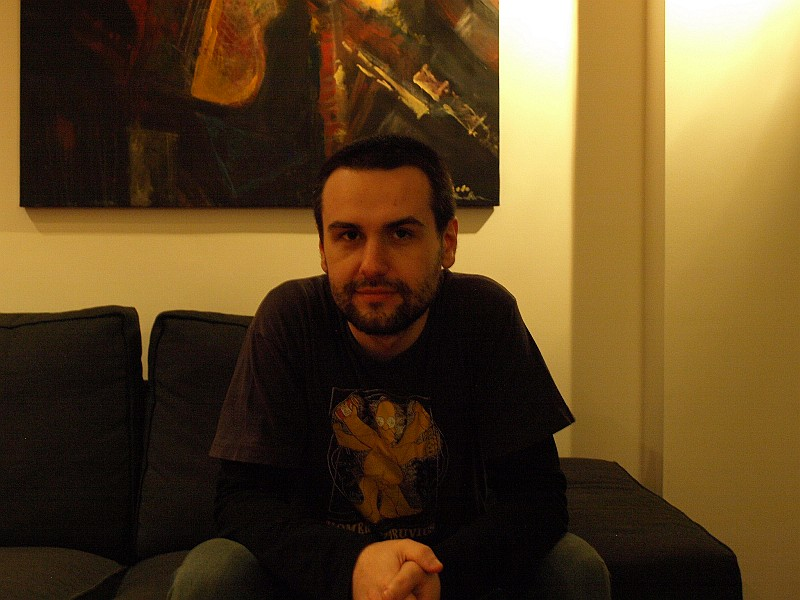

Cosmin Apreutesei
cosmin.apreutesei@gmail.com
Bucharest, RO
I learned to program in 5th grade on a Z80, and later on on a 486 and never stopped since. I got my first paying job at 17 when I wrote an online shop in php.
I write my code in Lua when I can, and in Python and Javascript when I can't. I will also program in Java, C++, C# and ObjC under some types of threats or extreme poverty. I still have a thing for relational databases. I will try to make a DSL when I can. Sometimes I meet people who use C for everything, and then I move on.
In the past I did a lot of Delphi in smokey apartment-sized companies full of smart people, and then more Delphi in mall-sized corporations full of droids and a one-hour commute. I even worked in a php farm for one month. My last job was at sellerengine where I developed products for large amazon sellers.
I currently live in Bucharest, and work as a freelancer.
My most significant project to date is luapower, the place which gets most of the output of my current research interests, which include vector graphics, GUIs, and p2p networks.
I am a market anarchist and a philosopher. I value peaceful parenting and animal welfare and I owe my current education to Ayn Rand, Stefan Molyneux, Ludwig Von Mises, Robert P. Murphy, Frank Lloyd Wright, Christopher Alexander, Douglas Engelbart, and others.
Cosmin,
December 8, 2014